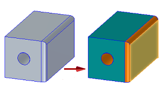

Part Painter command
The Part Painter command applies or removes face style color overrides on part faces, features, bodies, and construction surfaces. When you remove a face style color override, the selected element returns to the base style color listed in the Color Manager dialog box.

This command is only available when the Use individual part styles option is selected in the Color Manager dialog box.
Using Part Painter
Use the Part Painter command bar to apply color style overrides to:
-
All top-level objects that support styles.
-
Features of the part, including construction surfaces.
-
All features of the part.
-
All features of the same type on a part.
-
Bodies of the part.
-
Faces of the part.
-
Parasolid bodies.
For more information, see Apply an override color to the base part style with Part Painter.
Part Painter considerations
-
The Part Painter command only applies to the parts, features, and construction surfaces that are in the file when the command is executed. It does not provide default styles for future parts, features, and construction surfaces.
-
When you switch the view style from shaded to wireframe, parts display with the individual face color assignments.
-
Static previews display parts with the styles that were saved with the part or assembly.
-
A part copy that is inserted as a base feature takes on the base part color. It does not use the part color of the parent.
-
Fast patterns, fast mirror features, and mirrored body features that have multiple colors and styles only carry over an "all-over" feature override. The features do not carry over individual face colors.
-
The Part Painter command does not work on suppressed features.
-
If an individual face color is removed, the face reverts to the base color, not the feature color.
How do I
Set the Color Scheme for Solid EdgeSet the part color display
Apply an override to the base part style with Part Painter
Display Element Colors Based on Degrees of Freedom
Display draft face colors on a part
Learn more
Using colors in Solid EdgeUsing Color Manager and Part Painter
Using 3D model colors in drawing views
Look up more details
Color Manager commandColor Manager dialog box
Part Painter command bar
Relationship Colors command
Color dialog box